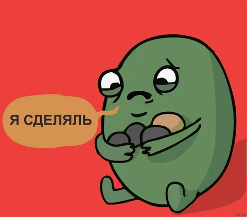

То там, то сям рассказывают про новые версии гпт-подобных чатов. Куча новых возможностей, прорывные фичи, новое поколение - все пироги. Дай, думаю, все же попробую задать ей пару обывательских вопросов, вдруг осилит. Может оно и правда развивается, а я давно не пробовал попользоваться. Как бы не так!
Мы тут с Лёхой думаем над внешкой нашей бэхи - то ли менять цвет, то ли оставить как есть, но добавить цветные акценты.
Попросил дать мне картинку конкретной модели авто в конкретном цвете. Рисует не тот цвет. Прошу поправить - отвечает "я не могу создавать изображения, зато могу помочь составить промт в другую нейронку". Что, блин? Это точно самая умная и универсальная модель? Вы можете себе представить в 00-х, чтобы поисковик на запрос "купить пластиковые окна в москве" вам отвечал "я такое искать не умею, но вот вам запрос покруче, дуйте с ним в другой поисковик - "+окна пвх|пластиковые +купить где:москва""?
Я уж молчу, что в этих промптах куча галлюцинаций - выдуманных деталей, не соответствующих исходному запросу, или просто фактологических ошибок (например, мне аи в промте написал, что е30 - это хэтчбек). И даже когда я в картиночную нейросеть вставил тот самый промпт, удалив из него самый бред, результат получился просто не туда. Полное несоответствие промпту (была просто е30 без всех тех деталей, которые напридумывал аи). И нафига все это было?
Ладно, есть отдельный режим рисования картинок. Вот только диалоговый режим у него не такой умный, как у текстовой модели, и мои подсказки он, собака, полностью игнорирует, рисуя вообще не то что нужно. Я ему как мог объяснял, что хочу получить. Вот почему тот же запрос в обычный поиск по картинкам находит релевантные образцы (в нужной стилистике, но не та машина), а сгенерить такое по уточненным требованиям мы не можем, не.
В общем, может, это я староват и туповат для того, чтобы правильно пользоваться АИ-чатами. Но мне казалось, что они как раз созданы для того, чтобы понимать естественную речь, а не только выверенные промпты. Я ж обычный обывательский запрос ввожу, что тебе, собака, не нравится? Очень горит, простите.
П.С. Сегодня рубрику #лёха_строит_бэху пропускаем, так как не хватило времени позаниматься бэхой на этих выходных. В субботу был в командировке, а в воскресенье отмечали Лёхин ДР с семьей (кстати, ему стукнуло 8, можете поздравить в комментах, я передам).
